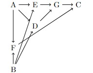

Consider the following SWIG, comprising seven discrete random variables. 
I am working with a substantial number of assumptions. Most notably I am not accounting for every possible factor, or my SWIG would become unmanageably large. I also reiterate that I am assuming defined potential outcomes and consistency here.
The primary technique I am using will be inverse probability weighing (which, you may recall, is equivalent to direct standardization if we are working with only discrete variables). Observe the following:
Here is an example we use a data set to estimate these values.
To find E[D] -- i.e. the general population's degree of interest in professional sports - we consider the data set of television ratings for the World Series and the NBA Finals (Game 3 for both) as well as the Super Bowl. Begin with d=0 and add 1/3 if the rating of year n is higher than the mean of the two adjacent ratings (years n-1 and n+1), for each of the three sports, and then round to the nearest integer. Alternatively, we are picking the "best two out of three" in performance relative to the years before and after (using both sides is important as ratings for MLB and NBA games have steadily fallen over several decades)
In each year, we will consider the observed values of A and B as follows -- setting A to 1 if there was a major life distruption during the year (this, of course, is relative) and B to 1 if there were significant interventions on daily life as a result of it:
Similarly, we consider E and F simultaneously by considering the number of postseason games the Tampa Bay Rays would have played if the pandemic not occurred, or if intervention had been different. This depends entirely on B. I am assuming the following.
What is the Data?
The data sets used in this algorithm are largely theoretical. However, two notable sources of data make their appearances during D and E. These data are: The Nielsen ratings of the Super Bowl, World Series, and NBA Finals (taken from www.sportsmediawatch.com). Additionally, a variety of win-loss records and patterns by major league baseball teams (from www.baseball-reference.com). The former data are used to calculate E[D(a,b)], which is estimated by E_(54)[D(a,b)] where the 54 data poiints arte the years from 1969 to 2022. As we're dealing with discrete variables that take relatively few values, we may be able to model our intrmediate variables using an outcome regression -- each variable can likely be modeled as c_1a+c_2b+c_3(+c_4ab)? I suspect ab=0, but the issue is that this fdataset is somewhat incomplete -- there's never been something like this in 77 years!General Steps
Identify the E[G(a,b)] for each value of a (which can be 0 or 1), and b (0 through 4). For each one, we consider the mediating variables C,D,E,F and use inverse probability weighing to calculate E[G] from an experimentall found E[G|c] (and the like), as well as a deduced E[C|a] (and the like), which can be viably estimated based on existing consumer habits in 2020.
Results of hte Algorithm
This is meant to answer a "butterfly effect" scenario, rather than planning for future events. That said, it works efficiently -- the hardest part is finding the probabilities in the world series, which is O(n^2) where n is the number of teams in Major League Baseball. The algorithm is consistent, and I actually will provide a code sample below.
Why do we care?
This matters to baseball (and sports in general) management, as it can show exactly how a player's career would, with highest probability, have played out if a significant interruption (e.g. a pandemic or World War II) and use this to make decisions. For example, merchandisers may be able to deduce if such an interruption will increas or decrease the player's popularity, and thus know how many jerseys to manufacture. This is fairly narrow but useful!Applying this algorithm!
I ran an algorithm to estimate the numebr of home runs Randy Arozarena would have hit during the postseason in a regular 162-game 2020 season. The algorithm worked the following way: